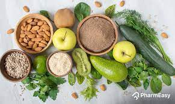
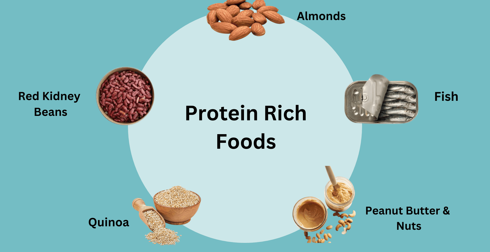
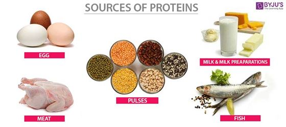

What to Eat on a High Protein Diet
A high-protein diet emphasizes the consumption of foods rich in protein to support various bodily functions and achieve specific health and fitness goals. Incorporating lean protein sources such as poultry, fish, eggs, legumes, and tofu into your meals can aid in muscle repair, promote satiety, and boost metabolism. Additionally, including dairy products, nuts, seeds, and whole grains can provide a well-rounded spectrum of essential amino acids, supporting overall health. Furthermore, a high-protein diet is often favored by those aiming for muscle development, weight management, and enhanced athletic performance. It is crucial to maintain a balance with other macronutrients and incorporate a variety of nutrient-dense foods to ensure a well-rounded and sustainable dietary approach. Always consult with a healthcare professional or a nutritionist before making significant changes to your diet to ensure it aligns with your individual health needs and goals.
  Nutritional value of protein
The nutritional value of a protein is measured by the quantity of essential amino acids it contains.
Different foods contain different amounts of essential amino acids. Generally:
- Animal products (such as chicken, beef or fish and dairy products) have all of the essential amino acids and are known as 'complete' protein (or ideal or high-quality protein).
- Soy products, quinoa and the seed of a leafy green called amaranth (consumed in Asia and the Mediterranean) also have all of the essential amino acids.
- Plant proteins (beans, lentils, nuts and whole grains) usually lack at least one of the essential amino acids and are considered 'incomplete' proteins.
If you follow a vegetarian or vegan diet, as long as you eat a wide variety of foods, you can usually get the protein you need. For example, a meal containing cereals and legumes, such as baked beans on toast, provides all the essential amino acids found in a typical meat dish.
Diet Plan Blogs
🌟 Explore the power of protein! 🍗💪 Check out our latest blogs on high-protein diets for valuable insights, delicious recipes, and tips to elevate your health and fitness journey. Dive in now and discover a world where taste meets nutrition! Visit GetMovePro.com today. #ProteinPower #HealthyLiving 🥦📚
Sources of High Protein
Vegetarian Sources
Include plant-based protein options such as:
- Legumes (beans, lentils, chickpeas)
- Tofu and tempeh
- Nuts and seeds
- Quinoa
Non-Vegetarian Sources
Include animal-based protein options such as:
- Lean meats (chicken, turkey, lean beef)
- Fish and seafood
- Eggs
- Dairy products (Greek yogurt, cheese)